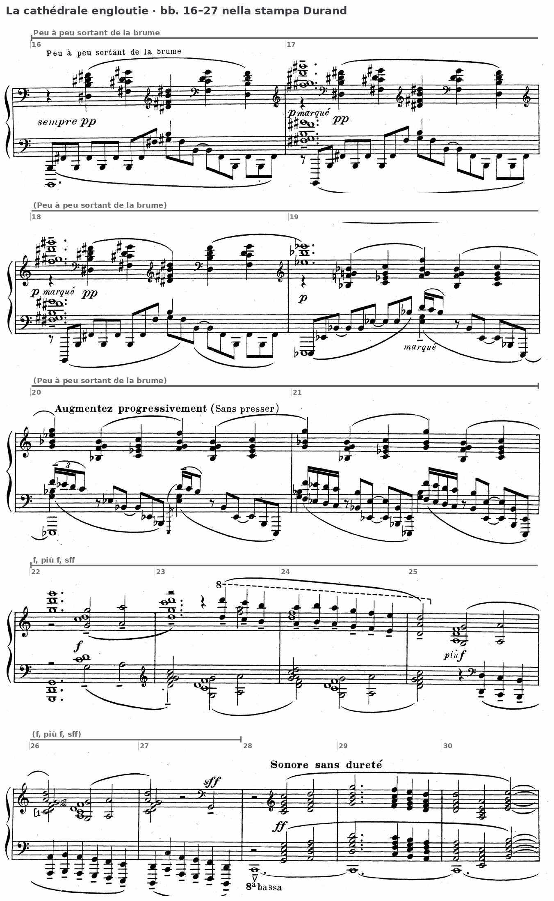
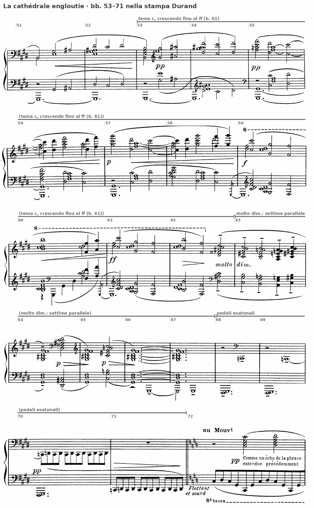
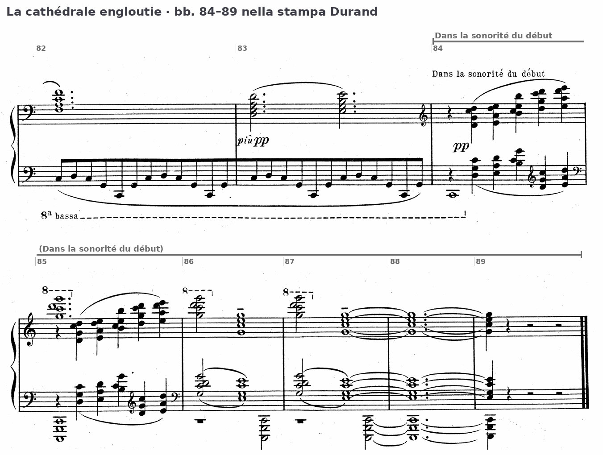

Due temi che non si sviluppano, un do grave tenuto per quattordici battute, una sola curva di sonorità dal pp al ff e ritorno. La seconda analisi integrale dell’anno, nella forma della prova scritta.
…la composizione, antiretoricamente, non ‘termina’, ma semplicemente si estingue.
M. Carrozzo, Storia della musica occidentale, vol. 2, p. 349
B4Oltre la tonalità: Lezione 16, la modalità diatonica, pp. 238–239; il sistema pentatonico, p. 246; il sistema esatonale, p. 248. Per il pedale, Lezione 10, p. 28.
D. D’Urso, C. Bertolini, Il linguaggio della musica, 5° anno (Mondadori Education 2022). Da rileggere prima dell’ora: il lidio come maggiore con il quarto grado innalzato e il misolidio come maggiore con il settimo abbassato (p. 239).
La prova di tipo A chiede l’analisi di una composizione, o di una sua parte significativa, tratta preferibilmente dal Novecento, con la sua contestualizzazione storico-culturale. Il testo si scrive in prosa continua nell’ordine dei quattro piani: i parametri, il materiale e le sue trasformazioni, la forma con la tabella, lo stile e il contesto. Per la Pavane l’asse dell’analisi era una cadenza negata e concessa; qui l’asse è una curva di sonorità, e ogni piano va riferito a essa.
1. Ogni affermazione porta la sua battuta; le altezze si danno con l’indice d’ottava (do4 = do centrale) e, dove la stampa usa 8va o «8a bassa», all’altezza reale, dichiarandolo nell’intestazione.
2. Gli accordi si nominano con le note, dal basso; il grado si aggiunge solo se esiste un centro, e si dice quale.
3. Prima il dato, poi l’interpretazione; dove la partitura ammette due letture, si espongono entrambe.
4. Le indicazioni dell’autore si citano in corsivo e in francese, come sono stampate.
5. Le fonti si citano con autore, titolo e pagina; il quarto piano usa soltanto fatti certi.
1. Prima dell’ascolto, numerare le battute della partitura (edizione Durand): sono 89, cioè 15, 15, 25, 20 e 14 nelle cinque pagine.
2. Durante l’ascolto, scrivere sopra il rigo grave il nome del suono tenuto più in basso ogni volta che cambia, e segnare con una parentesi le due battute in cui la dinamica arriva al ff.
Claude Debussy, La cathédrale engloutie, n. 10 dei Préludes per pianoforte, primo libro · edizione Durand, Parigi 1910, pp. 38–42 · 6/4 = 3/2, Profondément calme (Dans une brume doucement sonore) · 89 battute, numerate per l’analisi perché l’edizione non le numera (conteggio ripetuto due volte, sistema per sistema: 15 + 15 + 25 + 20 + 14 battute nelle cinque pagine). Le altezze sono indicate con l’indice d’ottava internazionale (do4 = do centrale) e, dove la stampa usa il segno d’ottava, sono date all’altezza reale; le tavole A–D riportano sulla partitura i segni a cui il testo rimanda.
Piano 1 · I parametri. I suoni gravi tenuti delle bb. 1–15 in successione. I suoni impiegati nella b. 1 e nelle bb. 7–12: quale manca, rispetto a una scala di sette suoni? Il primo accordo delle bb. 28 e 33, nota per nota, in tutte e due le mani.
Piano 2 · Il materiale. Le prime tre note del canto della b. 28 confrontate con la linea superiore della b. 1. La melodia delle bb. 47–52 confrontata con quella delle bb. 7–12: che cosa resta, che cosa cambia.
Piano 3 · La forma. Le sezioni, con le battute di inizio e di fine; dove cade il culmine dinamico, e quante battute lo precedono e lo seguono.
Piano 4 · Lo stile e la storia. Dove sta il titolo nella partitura, e che cosa evoca; quali tratti del linguaggio di Debussy, già visti in «Voiles» e «Pagodes», tornano qui.
La scheda si corregge piano per piano nelle slide seguenti, con i passi trascritti, gli estratti della stampa e le tavole; corretta, è la traccia del testo da scrivere a casa.
Le bb. 1–6 si aprono con il più grande vuoto di registro del brano. Nella sinistra la quinta raddoppiata all’ottava sol1–re2–sol2 tiene per due battute; nella destra un accordo della stessa specie, stampato sotto il segno d’ottava, suona re6–sol6–re7. Fra questi estremi entrano, dopo una pausa di semiminima, cinque accordi in moto parallelo: re–sol–re, mi–la–mi, si–mi–si, re–sol–re, mi–la–mi in tutte e due le mani, cioè una quarta e una quinta dentro l’ottava, senza terza. La linea superiore percorre il motivo che Carrozzo chiama a, re–mi–si, una seconda e una quinta ascendenti (p. 340); gli accordi sono generati sovrapponendo a ogni suono del motivo la sua quarta superiore e raddoppiando il bicordo all’ottava (p. 342). Nella b. 1 compaiono soltanto sol, la, si, re e mi: Kostka vi riconosce la pentatonica maggiore di sol, che deriva da una catena di quinte e per questo genera da sé accordi per quarte e quinte (Tonal Harmony, 7ª ed., p. 469). Alla b. 2 la destra tace e la sinistra oscilla sulla quinta grave (re2, sol1 legato, re2); le bb. 3–4 ripetono le bb. 1–2 sopra fa1–do2–fa2, e alla b. 5 lo stesso blocco poggia su mi1–si1–mi2. Il basso scende così per grado, sol–fa–mi, e prosegue a re (b. 13) e a do (b. 14): un tetracordo discendente da sol a do, che Carrozzo legge come il terzo dei principi d’ordinamento sovrapposti in queste battute (p. 344).
Con il fa del basso la pentatonica si completa nei sette suoni naturali, ma nessuno di essi si afferma come centro. Le stesse figure stanno sopra sol, fa e mi senza cambiare forma, e il basso che scende non prepara nessuna cadenza. La partitura delimita dunque un campo diatonico senza tonica; Carrozzo lo definisce «pre-modale» e osserva che il tentativo di assegnare un modo a ogni coppia di battute (sol pentatonico, fa lidio, mi frigio) ha un interesse solo teorico, perché l’orecchio non coglie cambi di centro così rapidi (pp. 343–344).
Scala di cinque suoni senza semitoni, ordinabile come catena di quattro quinte (sol–re–la–mi–si); per questo genera da sé accordi per quarte e per quinte (D’Urso, Bertolini, p. 246; Kostka, Tonal Harmony, p. 469).
L’errore tipico è cercare la tonalità delle prime battute e leggere re–sol–re come un sol maggiore senza terza, o la b. 3 come «IV grado». Gli accordi non cambiano forma quando il basso scende da sol a fa e a mi: sono la stessa figura sopra fondi diversi, e un grado presuppone un centro che qui la partitura non stabilisce.
Le bb. 7–13 (Doux et fluide) cambiano collezione e registro. Il mi, ultimo suono della b. 5, diventa un pedale in tre ottave (mi4 nella sinistra, mi5–mi6 nella destra) e sopra di esso una melodia in minime raddoppiata in tre ottave procede per mi–do♯ (b. 7), do♯–re♯–sol♯ (b. 8), mi–do♯ (b. 9), la♯–re♯ (b. 10), si–sol♯–la♯ (b. 11), re♯–do♯–re♯ (b. 12). La fine della b. 9 introduce l’unica triade di queste battute, mi–sol♯–mi in primo rivolto nei due righi (sol♯3–mi4–sol♯4, mi5–sol♯5–mi6), che si lega alla b. 10. I suoni impiegati sono sei, mi, sol♯, la♯, si, do♯, re♯; manca il fa♯. Sopra il pedale di mi la quarta eccedente la♯ caratterizza la collezione come un mi lidio incompleto, la scala maggiore con il quarto grado innalzato (D. D’Urso, C. Bertolini, Il linguaggio della musica, 5° anno, p. 239), e Carrozzo la classifica proprio così, indicando il fa♯ fra parentesi (p. 344). La melodia contiene a sua volta il profilo del motivo a: do♯–re♯–sol♯ (b. 8) è una seconda seguita da una quarta. Alla b. 13 la destra si ferma sulla quinta vuota mi5–si5–mi6, la sinistra sulla quinta si3–mi4–si4, e il basso passa da mi a re. Alle bb. 14–15 (pp (sans nuances)) gli accordi della b. 1 tornano nota per nota sopra do1–sol1–do2, mentre la sinistra alterna sol–re–la e la–mi–si, quinte sovrapposte che Carrozzo indica come la prima variante del vocabolario armonico iniziale (p. 342).
Il modo che si ascolta come una scala maggiore con il quarto grado innalzato (D’Urso, Bertolini, p. 239): sopra il mi, la♯ al posto del la. Alle bb. 7–12 il fa♯ manca, e la collezione è un lidio di sei suoni (Carrozzo, p. 344).

Dalla b. 16 (Peu à peu sortant de la brume) le collezioni si succedono con un ordine preciso. Sopra il pedale di si (bb. 16–18) le altezze appartengono alla pentatonica si–do♯–re♯–fa♯–sol♯; dalla b. 19, sopra il mi♭ grave, alla pentatonica mi♭–fa–sol–si♭–do; dalla b. 22, sopra la quinta sol1–re2–sol2 della b. 1, a una collezione su sol che, con il fa naturale, si completa nel misolidio. Giannetta descrive questi due passaggi come «cadenze esatonali»: la prima (bb. 18–19) è segnata dal salto di quarta diminuita del basso si–mi♭, la seconda (bb. 21–22) dal salto di terza maggiore mi♭–sol; i tre suoni toccati dal basso, si, mi♭ e sol, appartengono a una stessa scala per toni interi, benché nessuna delle collezioni coinvolte sia esatonale («Le transizioni modali nella musica di Claude Debussy», Rivista di Analisi e Teoria Musicale, 2012/1, pp. 42–43). Il dato spiega il tipo di arrivo: il basso descrive una triade aumentata, si–mi♭–sol, e ogni suo spostamento cambia la collezione senza passare per una dominante. Le gamme impiegate crescono intanto da cinque a sette suoni (Carrozzo, p. 344), e la crescita delle altezze disponibili accompagna quella della dinamica.
Giannetta chiama così il passaggio da un’area modale all’altra ottenuto con un salto del basso fra due suoni della stessa scala per toni interi: un evento unico, che segna una cesura nel percorso armonico (Rivista di Analisi e Teoria Musicale, 2012/1, p. 42). Qui: si–mi♭ (bb. 18–19), mi♭–sol (bb. 21–22).
Alla b. 28 (Sonore sans dureté, ff) il do grave, stampato do2 sotto «8a bassa» e dunque reale do1, si stabilisce per quattordici battute, fino alla b. 41, tenuto o ribattuto all’inizio delle bb. 32, 34, 36–38 e 40. Sopra di esso ogni suono della melodia porta una triade allo stato fondamentale: la destra la dispone in posizione stretta con il raddoppio della fondamentale all’ottava (do4–mi4–sol4–do5 alla b. 28), la sinistra la stessa triade un’ottava sotto in un’altra disposizione, con la quinta al basso (sol2–do3–mi3–sol3). Otto voci procedono così in moto parallelo, con quinte e ottave parallele fra tutte le parti. Letti come gradi di do, gli accordi delle bb. 28–31 sono I, ii | V, IV, iii, ii | ii, vi, iii | iii, IV, ii, I. La tradizione didattica anglosassone chiama questa tecnica planing diatonico: le qualità degli accordi sono date dalla scala in uso, e per questo il trasporto non è esatto; Kostka la definisce un’armonizzazione per accordi paralleli di una melodia di tipo gregoriano, e osserva che il pedale e l’insistenza ritmica su do, mi e sol mantengono il do come centro (p. 473). De la Motte classifica lo stesso caso come «ripieno tonale», cioè successione parallela di accordi formati da suoni di una sola tonalità (Manuale di armonia, p. 328). Nattiez, discutendo le bb. 28 sgg., nota che una successione di triadi fondamentali su ogni grado sfugge a qualunque grammatica dei concatenamenti tonali, e che tuttavia si percepisce come tonale per il pedale di do, per la struttura degli accordi e per una melodia «inequivocabilmente in do maggiore» (Il discorso musicale, pp. 153–154). Le due osservazioni non si escludono: il centro c’è, le funzioni no.
Alla b. 33 la triade si♭–re–fa porta il si♭ e trasforma la collezione in do misolidio; il si♭ ritorna alle bb. 35–37 (alla b. 36 nella triade di sol minore, v del misolidio, e in quella di si♭), e il si naturale riappare nella triade mi–sol–si della b. 39. Kostka descrive lo stesso spostamento dal do ionico al do misolidio e la restaurazione dello ionico, e aggiunge che Debussy evita nella melodia il tritono, come nel canto piano (p. 473). Le bb. 38–39 chiudono il canto con fa, fa | re, mi, e la b. 40 arriva al do sotto la triade di do maggiore: non vi è dominante, e l’arrivo avviene per grado congiunto nella melodia (re–mi–do) sopra un basso che non si è mai mosso. È una chiusa modale per moto melodico, non una cadenza armonica.
La fraseologia del tema dell’organo è regolare: due frasi di sei battute (bb. 28–33 e 34–39) e una chiusa di due (bb. 40–41). La seconda frase si apre ripetendo alla lettera le ultime due battute della prima (bb. 34–35 = bb. 32–33), come una ripresa per anadiplosi, e prosegue con un conseguente nuovo, trasposto nel registro acuto e colorato dal si♭ (bb. 36–39). Il tema del coro procede invece per addizione di incisi di una battuta su un’unica figura ritmica, e le sue frasi si allungano o si accorciano secondo il registro e la dinamica.
Suono prolungato per più battute, di norma al basso, sopra il quale l’armonia cambia (D’Urso, Bertolini, p. 28). Il do delle bb. 28–41 lo è per durata e posizione, ma non prepara né segue una dominante.
Successione di accordi in moto parallelo formati con i soli suoni di una scala: le qualità cambiano con il grado, e il trasporto non è esatto (de la Motte, Manuale di armonia, p. 328; Kostka, p. 473).
Due errori tipici. Segnare come «errori» le quinte e le ottave parallele: qui sono la tecnica, e il testo d’analisi le nomina come tali. Scrivere «cadenza perfetta in do» alla b. 40: non c’è un accordo di dominante, e il do arriva per grado nella melodia (re–mi–do) sopra un basso che non si è mai mosso.
Alla b. 42 il basso lascia il do e scende al si♭ (si♭1–si♭2, bb. 42–44), poi al la♭ (b. 45, legato nella b. 46), e la seconda metà della b. 46 lo riscrive sol♯1–sol♯2: lo stesso suono cambia nome e diventa il pedale della sezione seguente. Il passaggio alla collezione di quattro diesis avviene dunque per equivalenza enarmonica di una nota tenuta, l’analogo di una modulazione per nota comune. Sopra il si♭ la destra tiene un accordo di quarte e seconde, sol4–do5–re5–sol5, che ripresenta la struttura intervallare del motivo a.
Le bb. 47–71 (Un peu moins lent) hanno quattro diesis in chiave. La melodia, nel registro grave (il rigo superiore è in chiave di basso), riprende con gli stessi suoni la melodia delle bb. 7–12, due ottave sotto: mi3–do♯3 | do♯3–re♯3–sol♯3 | mi3–do♯3–sol♯2 | sol♯2–la♯2–re♯3 | si2–sol♯3–la♯3 | re♯4–do♯4–re♯4 (bb. 47–52). Cambia il fondo: il pedale non è più mi ma sol♯ (sol♯1, raddoppiato da sol♯2 fino alla b. 49). La stessa collezione di sei suoni che sopra il mi suonava come lidio, sopra il sol♯ si ascolta come sol♯ eolio, e Carrozzo legge così l’inizio della sezione (p. 345). È un caso esemplare di cambio di centro a collezione invariata: la melodia non cambia una nota, cambia il suono a cui il basso la riferisce. Dopo il culmine ff della b. 61, dalla b. 63 (molto dim.) la melodia del coro è armonizzata a otto voci con accordi di settima in moto parallelo. Butterworth cita da questo preludio una serie di settime di dominante nessuna delle quali risolve, senza indicarne le battute (Harmony in Practice, cap. «Some “rules” to follow»), e Mayfield ne ricava un esercizio sul parallelismo esatto alle bb. 62–68 (Theory Essentials, es. 34.1); Carrozzo osserva che qui i suoni non sono scelti dentro una gamma modale ma dal totale cromatico, e che la dissonanza, sottratta all’obbligo di risolvere, diventa un effetto timbrico (pp. 345–346). Alle bb. 68–69 restano soltanto il do♮2 della destra e il bicordo grave fa♯1–sol♯1 della sinistra; alla b. 70 la destra oscilla in crome do–re sopra lo stesso bicordo, alla b. 71 l’oscillazione passa alla sinistra. Do, re, fa♯ e sol♯ sono quattro suoni della scala esatonale di do, e Carrozzo definisce queste battute un «rauco conflitto» fra pedali tratti da una scala che contraddice ogni riferimento modale (p. 346).

Alla b. 47 il tema del coro non «modula»: ha le stesse altezze delle bb. 7–12. Cambia il suono del basso a cui la melodia si riferisce, e con esso il modo (lidio sul mi, eolio sul sol♯). Nel testo si scrive così, con le due battute a confronto.
Alla b. 72 (au Mouvt) la collezione torna ai suoni naturali con il centro do, e il si♭ ricompare alle bb. 77 e 79–81 come nelle bb. 33–37. Le bb. 84–89 (Dans la sonorité du début) riportano gli accordi di quarta e quinta del motivo a sopra il do grave, e il brano si chiude sulla triade di do maggiore, sopra do1–sol1–do2 al basso.
Il preludio non contiene una sola cadenza dominante–tonica. I confini delle frasi sono segnati da arresti su sonorità vuote (la quinta mi–si della b. 13), da cambi di pedale (bb. 16, 19, 22, 28, 42, 46) e da arrivi melodici sopra un basso fermo (bb. 40 e 84). Il do maggiore della b. 28 arriva dopo il sff della b. 27, in un’area che dalla b. 22 ha per fondamento la quinta grave sol1–re2–sol2: il rapporto sol–do fra le due zone ha la direzione di una cadenza autentica, ma sul sol non si forma mai un accordo di dominante con la sensibile, e la triade di do vale come approdo di registro e di dinamica più che come risoluzione. La chiusa della b. 40 e quella delle bb. 83–84 sono modali: la melodia arriva al do per grado (re–mi–do), sopra il do tenuto o ribattuto. Nell’ultima ripresa del tema la frase non si chiude da sola: le bb. 82–83 (fa | re, mi) lasciano la finale al do della b. 84, che coincide con l’inizio della coda. Il tema e la coda si saldano per elisione.

Debussy indica il metro come 6/4 = 3/2, e la doppia cifra ha un significato preciso. Fino alla b. 15 la partitura non decide fra la divisione in due e quella in tre: gli accordi di semiminima delle bb. 1 e 14 sono sei per battuta, le minime del coro (bb. 7–12) tre. Il 3/2 si afferma con il tema dell’organo, scritto in minime e minime puntate, e il 6/4 riappare alle bb. 72–83 nell’ostinato del basso, dodici crome raggruppate a sei, sotto accordi che conservano il passo di minima: una polimetria che Carrozzo segnala esplicitamente (pp. 344 e 346). Le indicazioni agogiche sono poche e tutte collocate ai confini formali: Profondément calme (b. 1), Doux et fluide (b. 7), Peu à peu sortant de la brume (b. 16), Augmentez progressivement (Sans presser) (b. 20), Sonore sans dureté (b. 28), Un peu moins lent (Dans une expression allant grandissant) (b. 47), au Mouvt (b. 72), Dans la sonorité du début (b. 84). Un problema di tempo resta aperto: Roy Howat ha sostenuto, sulla base del manoscritto, che Debussy intendesse le bb. 7–12 e 22–83 al doppio della velocità stampata (Carrozzo, p. 349), e la registrazione su rullo che il compositore realizzò nel 1913 è stata misurata battuta per battuta proprio da questo punto di vista (J. Rink, Rivista di Analisi e Teoria Musicale, 2007/2, p. 10). La partitura stampata, che è il testo di riferimento di questa analisi, non registra questa differenza.
Carrozzo distingue nella testura quattro strati: gli elementi tematici, gli accordi lunghi che durano non più di un paio di battute, le figure arpeggiate del registro grave, le note o gli accordi tenuti con funzione di pedale (pp. 337–338). Nelle bb. 1–15 sono presenti tre o quattro strati insieme; fra la b. 16 e la b. 21 tutti e quattro; dalla b. 20 gli arpeggi scompaiono e gli accordi lunghi si riducono a riempimento armonico; alla b. 28 restano due strati soltanto, il pedale e le triadi a otto voci (pp. 340–341). Il processo di emersione consiste dunque in una semplificazione della trama accompagnata da un ispessimento dello strato principale. Nella seconda metà del brano la trama si assottiglia: il coro entra come una sola linea nel registro grave (b. 47), il tema dell’organo ritorna a quattro voci invece che a otto (b. 72) e il suo pedale diventa una figura di crome che mescola gli strati del pedale e dell’arpeggio (Carrozzo, p. 346). Surian osserva che fra i Préludes la Cathédrale è quello che riproduce con il pianoforte la sonorità dell’organo (Manuale di storia della musica, vol. IV, p. 50); Piston descrive le bb. 1 sgg. come un’evocazione dell’organum parallelo medievale (Armonia, p. 489, es. 31-30).
La dinamica segue la stessa curva. Dal pp iniziale (sempre pp alla b. 16, p marqué alle bb. 17–18, p alla b. 19) la crescita avviene per gradi (Augmentez progressivement, b. 20; f alla b. 22, più f alla b. 25, sff alla b. 27) fino al ff della b. 28, che resta il culmine del brano. Alle bb. 42–45 la diminuzione è scritta battuta per battuta, p, più p, pp, più pp. Il coro riparte pp expressif et concentré (b. 47), cresce fino al ff della b. 61 e si spegne con il molto dim. della b. 63; l’eco del tema dell’organo è pp (b. 72) e più pp (b. 83), e la coda resta pp.
Nella b. 1 la linea superiore degli accordi in moto è re–mi–si; nella b. 28 il canto comincia do–re–sol; nella b. 8 la melodia del coro è do♯–re♯–sol♯. Quale intervallo cambia, e quale resta?
I due temi del brano hanno profili opposti. Il tema dell’organo (b. 28) procede per gradi congiunti e per salti di quarta e quinta dentro l’ambito la4–si♭5 (do–re | sol–fa–mi–re | re–la–mi | mi–fa–re–do | do–la | si♭–re–fa), senza tritono melodico; le sue prime tre note, do–re–sol, ripetono gli intervalli del motivo a, una seconda e una quarta (Carrozzo, p. 341). Il tema del coro (bb. 7–12, 47–67) procede per minime, si appoggia sulla quarta eccedente la♯ e contiene a sua volta il profilo seconda + quarta (do♯–re♯–sol♯). Il motivo a non è un tema ma un materiale pre-tematico, un «aforisma motivico» in tre suoni (p. 342), e prepara l’ingresso del tema dell’organo trasformando a poco a poco la sua quinta in una quarta (bb. 16–27, p. 342). Bianchi porta la melodia di questo preludio come esempio di melodia «per autogenerazione»: una cellula ripetuta e modificata, poi ripresa in parte e allungata (Lineamenti di analisi musicale, p. 191).
Il materiale si riduce a tre elementi. Il motivo a (re–mi–si, bb. 1, 14, 84) è una cellula di tre suoni; il tema b, o «tema dell’organo», occupa le bb. 28–41 e ritorna alle bb. 72–83; il tema c, o «tema del coro», compare in forma incompleta alle bb. 7–13 e per intero dalla b. 47 (le denominazioni sono di Carrozzo, pp. 340–341). I temi non vengono sviluppati: tornano con le stesse altezze, cambiando registro, densità, dinamica e fondo armonico. Carrozzo ne ricava che fra i temi non si stabilisce alcun rapporto dialettico, né transizione né contrapposizione, e che le tecniche dell’elaborazione tematica sono qui deliberatamente escluse (p. 348).
Le trasformazioni sono di tre tipi. La prima è il cambio di fondo a figura invariata: gli accordi della b. 1 tornano identici alla b. 14 sopra il do, e la melodia delle bb. 7–12 torna identica alle bb. 47–52 sopra il sol♯; nel primo caso cambia il basso, nel secondo il basso e il registro. La seconda è il cambio di densità: il tema dell’organo passa dalle otto voci della b. 28 alle quattro della b. 72, e il pedale tenuto diventa alle bb. 72–83 l’ostinato do–re–do–sol–do–sol, che Carrozzo legge come una permutazione delle prime note del tema, do, re, sol (p. 346). La terza è il cambio di armonizzazione: il tema del coro, monodico alle bb. 47 sgg., è armonizzato dalla b. 63 con accordi di settima paralleli. Fra un elemento e l’altro le cellule passano per affinità intervallare più che per derivazione: le campane delle bb. 40–41 (do–re nella voce interna, poi sol–do–re) ripetono le tre note del tema b, e l’oscillazione do–re delle bb. 70–71 anticipa le prime due crome dell’ostinato della b. 72.
| Sezione | Battute | N. bb. | Materiale | Centro / collezione | Indicazioni |
|---|---|---|---|---|---|
| A · introduzione | 1–15 | 15 | motivo a in quarte parallele (1–6, 14–15); tema c anticipato su pedale di mi (7–13) | campo diatonico senza centro; mi lidio senza fa♯ (7–13); basso sol–fa–mi–re–do | Profondément calme, pp; Doux et fluide (7) |
| Emersione | 16–27 | 12 | motivo a su quattro strati; campane (22–27) | pentatonica di si (16–18), di mi♭ (19–21), sol misolidio (22–27) | Peu à peu sortant de la brume; Augmentez progressivement (20); f (22), sff (27) |
| B · tema dell’organo | 28–41 | 14 | tema b a otto voci; campane (40–41) | do ionio, do misolidio (33, 35–37); pedale do1 | Sonore sans dureté, ff |
| Transizione | 42–46 | 5 | accordo di quarte e seconde, campane | basso si♭–la♭ = sol♯ | p, più p, pp, più pp |
| C · tema del coro | 47–71 | 25 | tema c al basso (47–53), all’acuto (54–62), in settime parallele (63–67); pedali esatonali (68–71) | sol♯ eolio; cromatico (63–67); esatonale (68–71) | Un peu moins lent, pp expressif et concentré; ff (61); molto dim. (63) |
| B′ · eco | 72–83 | 12 | tema b a quattro voci; ostinato di crome | do ionio, misolidio (77, 79–81) | au Mouvt, pp, Comme un écho de la phrase entendue précédemment |
| Coda | 84–89 | 6 | motivo a sul do; triade finale | do | Dans la sonorité du début, pp |
La forma si lascia descrivere in due modi, e la differenza è istruttiva. Secondo la successione dei temi è un arco A–B–C–B′–A′, con la coda che riprende la sonorità dell’inizio; Natoli la riduce a una forma ABA articolata in sei sottosezioni (Percorsi di analisi musicale, p. 448). Secondo la sonorità è una curva con un solo culmine: dodici battute di emersione (16–27) conducono al ff della b. 28, e tutto ciò che segue è un ritorno progressivo al silenzio, per due vie diverse, la dissoluzione del modo nel tema del coro (cromatismo, poi esatonale) e la rarefazione della trama nell’eco del tema dell’organo (Carrozzo, pp. 345–347). Le proporzioni favoriscono la seconda lettura: la sezione C, la più lunga (25 battute), non è un contrasto ma la fase discendente della curva, e la B′ non ripete la B ma la ascolta da lontano, come indica la didascalia della b. 72. Il ritorno finale del motivo a non chiude un discorso, lo sospende: Carrozzo scrive che la composizione, antiretoricamente, non termina ma si estingue (p. 349). Le proporzioni calcolate da Howat con il tempo doppio delle bb. 7–12 e 22–83 riducono le 89 battute a 55 e collocano l’ingresso del tema dell’organo alla sezione aurea del brano (Carrozzo, p. 349); è un’ipotesi che dipende da una lettura del tempo non scritta nell’edizione e che qui si registra senza adottarla.
Nel testo la tabella registra la forma; il paragrafo che la segue ne interpreta le proporzioni.
I dodici Préludes del primo libro furono pubblicati da Durand nel 1910. Come in tutta la raccolta, il titolo non sta in testa al brano ma dopo l’ultima battuta, fra parentesi e preceduto da tre punti, «(… La Cathédrale engloutie)». Surian lega questa collocazione alla poetica simbolista, che preferisce l’allusione alla denominazione, e definisce questi titoli évocations più che titoli veri e propri (vol. IV, p. 41); Galli osserva che la suggestione extramusicale è così proposta «in modo quasi sussurrato» e non costituisce un vincolo, come nella musica a programma (Generi, forme, stili musicali, p. 225). Il titolo rinvia alla leggenda bretone della città di Ys, sommersa dal mare per castigo, la cui cattedrale riemergerebbe talvolta facendo udire le sue campane (Carrozzo, p. 335; Surian, p. 50). Carrozzo avverte però che la musica aderisce al racconto senza esserne una descrizione: alla sua base sta un’invenzione sonora, l’emersione e la re-immersione, che sarebbe intelligibile anche senza il titolo (p. 336).
Gli elementi di linguaggio che la Cathédrale mette in gioco sono quelli che la storiografia riconosce come tipici di Debussy. Surian cita proprio l’inizio di questo preludio come esempio di accordi «vuoti», senza terze, e collega all’impiego di scale esatonali, pentatoniche e modali la neutralizzazione delle funzioni tradizionali degli accordi (p. 46). Butterworth indica nell’introduzione delle quinte e ottave parallele una delle innovazioni radicali di Debussy e porta come esempio l’inizio di questo preludio. Ciò che distingue la Cathédrale è la convivenza dei due ordini di materiali: gli accordi per quarte e quinte, nuovi, e le triadi, antiche, sono trattati nello stesso modo, per moto parallelo, come «grappoli» di suoni con valenza timbrica (Carrozzo, p. 342). La triade maggiore della b. 28 non è perciò un ritorno alla tonalità ma il punto estremo di un processo di sonorità, e la stessa sorte tocca alle settime delle bb. 63–67, che Carrozzo considera la conquista principale della grammatica di quegli anni: la dissonanza smette di essere un fattore di tensione e diventa colore (p. 345). Il preludio offre infine una delle prove più chiare del rapporto fra Debussy e la tradizione dell’organum e del canto piano, evocati attraverso il moto parallelo e una melodia senza tritono (Piston, p. 489; Kostka, p. 473), una tradizione che il compositore non cita ma ricostruisce come immagine sonora di un passato lontano.
Intestazione: autore, titolo, organico, anno, edizione, numero di battute e come sono state contate, convenzioni (do4, altezze reali).
Introduzione: in poche righe, la tesi; qui, che la forma nasce da un processo di sonorità.
1–4: i quattro piani in prosa continua, ciascuno ricondotto alla tesi; la tabella nel terzo.
Conclusione: come i dati si sostengono a vicenda, e che cosa resta aperto.
L’introduzione del testo modello:
La cathédrale engloutie è costruita su un’idea di sonorità prima che su un’idea tematica. Il brano parte da accordi vuoti, sospesi fra i registri estremi della tastiera, raggiunge alla b. 28 una massa di triadi a otto voci sopra un do grave tenuto per quattordici battute, e torna infine nell’indistinto da cui era partito. Carrozzo chiama questo percorso «emersione-immersione» e ne fa il principio che governa tanto la forma quanto i dettagli del linguaggio (Storia della musica occidentale, vol. 2, p. 336). L’analisi che segue verifica questa tesi sui dati: mostra come la densità della scrittura, la scelta delle collezioni e il comportamento del basso crescano insieme fino alla b. 28 e si disgreghino insieme dopo la b. 47, e come due soli temi, accostati e mai elaborati, bastino a reggere una forma di quasi novanta battute. Ne risulta un preludio in cui la triade maggiore, l’accordo più consueto della tradizione, torna a essere un punto d’arrivo, ma senza nessuna delle funzioni che la tradizione le assegnava.
Scrivere il paragrafo del primo piano sulle bb. 28–33, in sei-otto righe: il pedale con la sua durata e la sua altezza reale, la disposizione degli accordi nelle due mani con le note della b. 28, il moto parallelo, il si♭ della b. 33, e una frase che collega questi dati al culmine della sonorità. Si finisce a casa, dentro il testo completo.
La conclusione del testo modello:
I dati dei quattro piani convergono. Le altezze passano da un campo diatonico senza centro a collezioni sempre più complete fino al do della b. 28, e dopo il culmine si disgregano nel cromatismo e nell’esatonale prima di tornare al do; la trama si semplifica e si ispessisce verso il culmine e poi si assottiglia; la dinamica traccia la stessa curva; i temi non si sviluppano ma cambiano fondo, registro e densità. La forma che ne risulta non si fonda su relazioni tonali né su un’elaborazione tematica, ma su un unico processo di sonorità, e la triade di do maggiore vi occupa il posto che nella forma tonale spettava alla cadenza. Restano aperte due questioni, che un’analisi d’esame può dichiarare senza risolvere: il tempo reale delle bb. 7–12 e 22–83, che la registrazione di Debussy e il manoscritto suggeriscono più rapido della stampa, e lo statuto del do finale, che la partitura presenta come centro senza mai dimostrarlo con una dominante.
Un campo diatonico senza centro sopra un basso che scende da sol a do (bb. 1–15); collezioni che si completano mentre il basso salta per toni interi, si–mi♭–sol (bb. 16–27); triadi parallele a otto voci sopra il do1 tenuto, ionio e misolidio (bb. 28–41); la♭ riscritto sol♯ e il canto del coro con le stesse altezze delle bb. 7–12 su un altro centro (bb. 46–52); il modo che si dissolve in settime parallele e in suoni esatonali (bb. 63–71); l’eco a quattro voci con il pedale divenuto ostinato (bb. 72–83).
Quando un brano non ha cadenze, la forma va cercata nei parametri che cambiano insieme: qui densità, registro, collezione e dinamica disegnano la stessa curva, e il testo d’analisi la dimostra battuta per battuta.
L’analisi scritta completa è nei materiali della classe. La lezione si chiude con il solfeggio: il canto del coro delle bb. 7–12, intonato sopra il mi tenuto al pianoforte, e il ritmo delle bb. 72–74, crome contro minime. La prossima unità comincia con Satie e il modo ritrovato.
Il testo completo, nella forma della prova di tipo A, è quello distribuito nelle slide dei quattro piani. Qui è raccolto per intero come versione da stampare; la versione in PDF è nei materiali della classe.
Compiti per la prossima volta
A partire dalla scheda dei quattro piani compilata in classe e dal paragrafo sulle bb. 28–33, scrivi l’analisi integrale di «La cathédrale engloutie» nella forma della prova di tipo A: intestazione, introduzione con la tesi, i quattro piani in prosa continua (con la tabella della forma nel terzo), conclusione.
Da tre a quattro pagine. Ogni affermazione porta la sua battuta; le altezze all’altezza reale dove la stampa usa 8va o «8a bassa»; gli accordi nominati con le note, dal basso; le indicazioni di Debussy in francese; almeno tre fonti citate con la pagina. Si consegna su Classroom; dopo la consegna si riceve il testo modello per il confronto.
Sul quaderno, a matita. La foto del lavoro finito va su Classroom. Nel Workbook è l’esercizio C5-U3-L6-01.
Compiti per la prossima volta
n. 150 e n. 151 parlato · n. 152 e n. 153 cantato · n. 154 e n. 155 ritmico
Ogni pezzo a tempo, senza fermarti: il parlato a nomi, il cantato prendendo il primo suono dalla tastiera, il ritmico battendo la pulsazione.
Scrivi la linea del basso sul quaderno, in chiave di basso: otto battute in 3/4, la maggiore. Il primo suono è do♯. Prima il riferimento, poi tutto due volte, ogni coppia di battute due volte, il collegamento 1–4, 3–6 e 5–8, e tutto per controllare.
Il riferimento: accordo di tonica e primo suono
Il dettato · otto battute
Le sezioni (riferimento, tutto, le coppie, il collegamento) si ascoltano una per una e si ripetono quanto serve; le fasi fanno la procedura della classe, con gli annunci e le pause, da qualunque punto.
Sul quaderno scrivi in testa la sigla C5-D-U03-L6. Si corregge all’inizio della prossima lezione.
Compiti per la prossima volta
Scrivi un contrappunto di seconda specie (due note contro una) sotto il canto fermo, in modo dorico (finale re): undici battute. Comincia su una consonanza perfetta, alla cadenza la sensibile sale alla finale, niente quinte e ottave consecutive.
Sul quaderno, con la sigla C5-CP-U03-L6 in testa; la foto va su Classroom.
Realizza a quattro parti il basso senza numeri: dodici battute in 4/4, re minore. Trova tu l’accordo di ogni nota (la regola dell’ottava è il punto di partenza) e scrivilo sotto; poi il soprano, poi le voci interne. Accordi che puoi usare: tutto quello studiato, e una modulazione a un tono vicino.
Sul quaderno, con la sigla C5-BD-U03-L6 in testa; la foto va su Classroom.
Armonizza a quattro parti il canto dato: dodici battute in 4/4, re maggiore. Prima le cadenze, poi il basso per intero, e solo alla fine contralto e tenore. Accordi che puoi usare: tutto quello studiato, e una modulazione a un tono vicino. La melodia modula: trova dove, e in quale tonalità arriva.
Sul quaderno, con la sigla C5-CD-U03-L6 in testa; la foto va su Classroom.
Scritto: Debussy, «La cathédrale engloutie»: il testo dell’analisi (Workbook, esercizio C5-U3-L6-01), sul quaderno; la foto va su Classroom. Solfeggio dal quaderno di lettura: parlato n. 150, 151; cantato n. 152, 153; ritmico n. 154, 155 (a tempo, senza fermarsi). Dettato C5-D-U03-L6 dalla pagina della lezione (sezioni da ascoltare, o le fasi della procedura guidata), sul quaderno con la sigla. Contrappunto di seconda specie sul canto fermo (C5-CP-U03-L6). Basso senza numeri da realizzare a quattro parti (C5-BD-U03-L6). Canto dato da armonizzare a quattro parti (C5-CD-U03-L6).
In classe
A nomi, a tempo, con la mano che batte. Chi si ferma riparte dalla battuta dopo.
Apri il n. 146 nel quaderno di lettura ↗ chiave di contralto · 4/4
In classe
Si prende il tono dalla tastiera, si canta insieme; poi a gruppi.
Apri il n. 147 nel quaderno di lettura ↗ chiave di violino · 3/4 · la minore
Apri il n. 148 nel quaderno di lettura ↗ chiave di violino · 4/4 · re minore
In classe
Tutti insieme, battendo la pulsazione. Poi a file, due battute a testa.